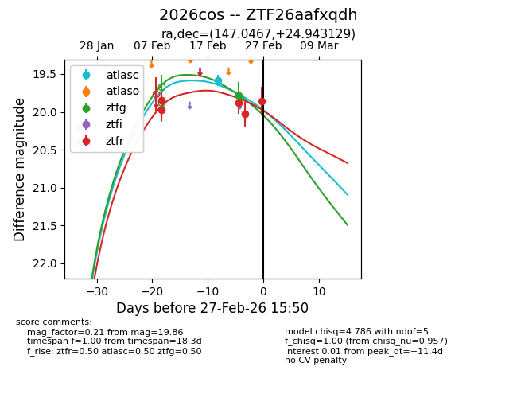
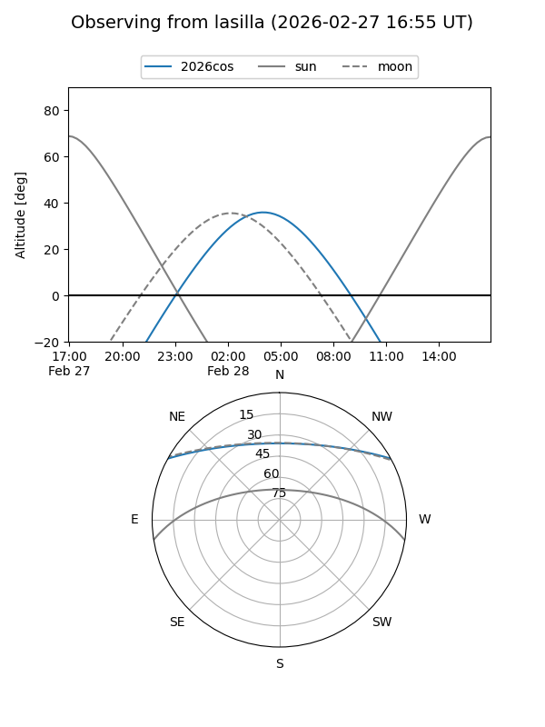
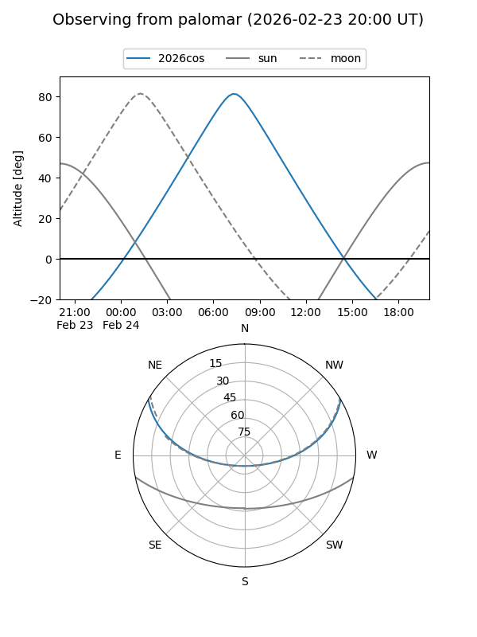
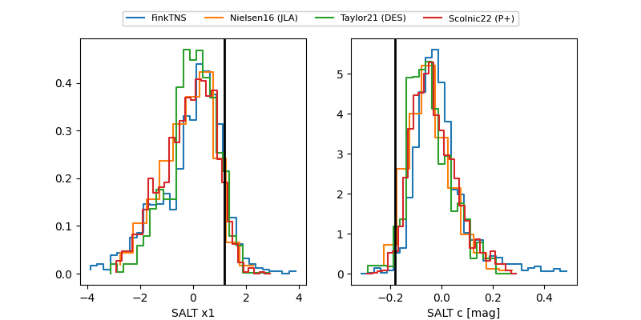

2026cos
Target 2026cos at 2026-02-27 15:53
Aliases and brokers:
FINK: link
Lasair: link
ALeRCE: link
TNS: link
YSE: link
alt names
ZTF26aafxqdh (ztf,fink_ztf)
2026cos (tns,yse)
Coordinates:
equatorial (ra, dec) = 147.0467,+24.94313
equatorial (HMS+DMS) = 09:48:11.21,+24:56:35.26
galactic (l, b) = (205.2979,+49.00469)
Flags:
Photometry:
last atlasc=19.59, ztfg=19.78, ztfr=19.86
1 atlasc, 1 ztfg, 5 ztfr detections
Lightcurve

Visibility


Additional plots
